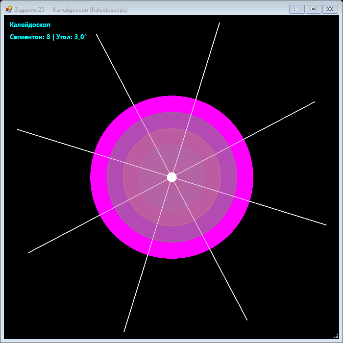

Урок 8.5: Калейдоскопические эффекты
Симметрия и трансформации
Калейдоскоп строится из повторяющихся сегментов, которые поворачиваются вокруг центра. Каждый сегмент содержит одинаковый рисунок, отражённый или вращённый.
📝 Пример задания — калейдоскоп
8 одинаковых сегментов поворачиваются вокруг центра через g.Save() / g.Restore(). Внутри каждого сегмента рисуются концентрические окружности и расходящиеся линии:
using System;
using System.Drawing;
using System.Drawing.Drawing2D;
using System.Windows.Forms;
namespace CSharpGraphicsApp
{
public class Task25_Kaleidoscope : Form
{
private float rotationAngle = 0;
private readonly Timer timer = new Timer();
private int segments = 8;
public Task25_Kaleidoscope()
{
Text = "Задание 25 — Калейдоскоп (Kaleidoscope)";
Size = new Size(700, 700);
BackColor = Color.Black;
DoubleBuffered = true;
Paint += Form_Paint;
timer.Interval = 16;
timer.Tick += (s, e) => { rotationAngle += 0.03f; Invalidate(); };
timer.Start();
FormClosed += (s, e) => timer.Stop();
}
private void Form_Paint(object sender, PaintEventArgs e)
{
e.Graphics.SmoothingMode = SmoothingMode.AntiAlias;
e.Graphics.Clear(Color.Black);
int cx = ClientSize.Width / 2;
int cy = ClientSize.Height / 2;
int maxRadius = (int)Math.Min(cx, cy);
float anglePerSegment = 360f / segments;
for (int seg = 0; seg < segments; seg++)
{
var state = e.Graphics.Save();
e.Graphics.TranslateTransform(cx, cy);
e.Graphics.RotateTransform(seg * anglePerSegment);
DrawSegmentPattern(e.Graphics, maxRadius);
e.Graphics.Restore(state);
}
e.Graphics.FillEllipse(Brushes.White, cx - 10, cy - 10, 20, 20);
e.Graphics.DrawString($"Сегменты: {segments} | Угол: {rotationAngle:F1}°",
new Font("Segoe UI", 10, FontStyle.Bold), Brushes.Cyan, 10, 10);
}
private void DrawSegmentPattern(Graphics g, int maxRadius)
{
Color[] colors = { Color.Red, Color.Cyan, Color.Yellow, Color.Lime, Color.Magenta };
for (int i = 0; i < 5; i++)
{
float r = maxRadius * (i + 1) / 5f;
Color color = colors[i % colors.Length];
using (var brush = new SolidBrush(Color.FromArgb(150, color)))
g.FillEllipse(brush, -r / 2, -r / 2, r, r);
using (var pen = new Pen(color, 2))
g.DrawEllipse(pen, -r / 2, -r / 2, r, r);
}
for (int i = 0; i < 8; i++)
{
float angle = (float)(i * Math.PI / 4 + rotationAngle * 0.1f);
float ex = maxRadius * (float)Math.Cos(angle);
float ey = maxRadius * (float)Math.Sin(angle);
using (var pen = new Pen(Color.White, 1))
g.DrawLine(pen, 0, 0, ex, ey);
}
}
}
}Практика
- Нарисуйте базовый узор внутри одного сектора.
- Скопируйте его вокруг центра, применяя RotateTransform.
- Добавьте отражения и меняйте цвета.
- Анимируйте вращение всего узора.
Задание по аналогии: Калейдоскоп
По аналогии с Task25_Kaleidoscope создайте анимированный калейдоскоп с N сегментами.
- Объявите поля
float rotationAngle = 0иint segments = 8. ВTimer_TickувеличивайтеrotationAngle += 0.03f. - В
Form_PaintвычислитеanglePerSegment = 360f / segments. В цикле по сегментам сохраняйте состояние черезg.Save(), вызывайтеTranslateTransform(cx, cy)иRotateTransform(seg * anglePerSegment). - В методе
DrawSegmentPatternрисуйте узор относительно точки (0,0): концентрические полупрозрачные окружности и расходящиеся белые линии. - После рисования узора восстанавливайте состояние через
g.Restore(state)— это отменит TranslateTransform для следующего сегмента. - Дополнительно: добавьте TrackBar для изменения числа сегментов (4, 6, 8, 12) и посмотрите, как меняется симметрия.
Пример результата выполнения задания:

Скриншот программы (Task25)
💡 Совет: Всегда используйте пару
Save() / Restore() при временных трансформациях. Не используйте ResetTransform() — это сбросит все накопленные трансформации, а не только последнюю.
Проверка
Что даёт зеркальное отражение сегментов? Почему важно сохранять симметрию в калейдоскопе?